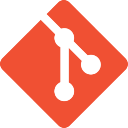

Git
(Impariamo ad utilizzare un Software utile per la gestione dei progetti)
(Impariamo ad utilizzare un Software utile per la gestione dei progetti)

Git è una distribuzione gratis e Open Source progettato per gestire qualsiasi cosa, dai progetti piccoli a quelli molto grandi, con velocità ed efficienza.
• è uno strumento per lo sviluppo in ambito collaborativo e per l’implementazione di progetti Open Source
• è un DVCS (Distributed Version Control System), cioè sistema software per il controllo di versione distribuito
• è stato realizzato nel 2005 da Linus Torvalds, informatico scandinavo a cui si deve anche la paternità del Kernel Linux
L'attività si è svolta in due lezioni: il 25/10/2022 e il 14/02/2023 dalle ore 15:00 alle ore 18:00 presso l'aula Multimedia A della sede centrale dell'Istituto Comprensivo Superiore IIS Blaise Pascal, dove un esperto di nome Alessandro Montanari ci ha introdotto all'utilizzo del software GIT.
Durante la prima lezione, ci è stato presentato l'uso effettivo del software e i suoi vari ambiti applicativi. Abbiamo cominciato ad utilizzare i primi comandi per creare un account GIT e ad apprendere le sue grandi funzionalità.
Nella seconda ed ultima lezione, invece, abbiamo cominciato a sfruttare le sue potenzialità, collegandoci al sito di GitHub, dove abbiamo potuto collaborare tra compagni per gestire un progetto insieme, apportare modifiche e/o segnalando errori insieme e molto altro.
Ho trovato quest'esperienza molto interessante e veramente utile, in quanto questo tipo di applicativo può tornarci davvero utile sia in ambito scolastico sia, in futuro prossimo, in ambito lavorativo.
La modalità con la quale è stata svolta e il modo in cui l'esperto si è atteggiato durante tutta la durata dell'esperienza hanno funzionato discretamente al tal fine di farci apprendere, quanto più possibile, l'utilità del programma.
Copyright © 2022 - Tutti i diritti riservati - Simone Bini
Powered by Bino